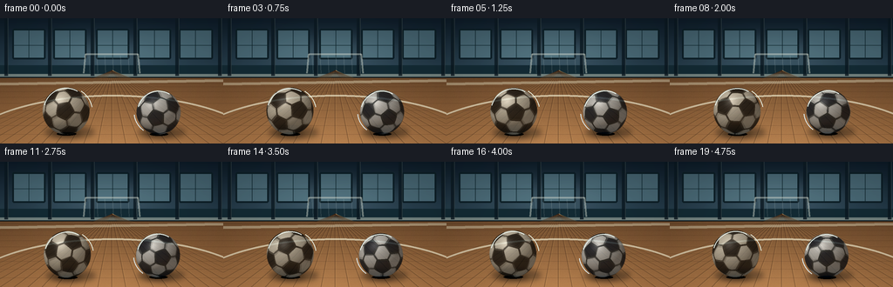
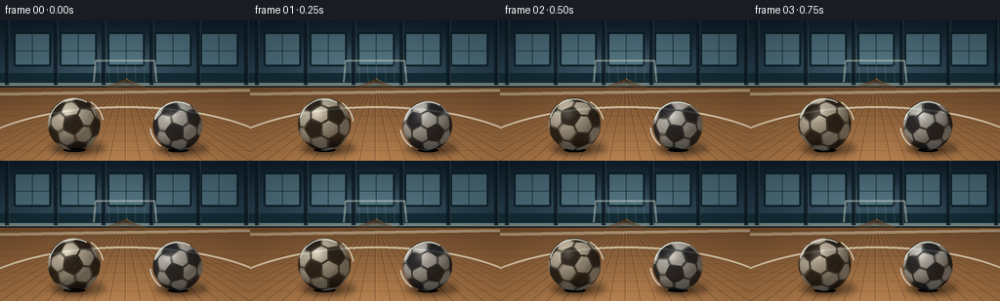

CODING AGENTS AS PIXEL WORLD MODELS
traex/GPT-5.6-Sol · instance_preservation_0027
点击播放 · 原生 RGB 像素
逐轮保存的候选
回放视频、检查图与代码变化。
每份候选均可单独播放。实际图片检查记录在下方工具轨迹中。
候选 01播放与检查图
点击播放 · 原生 RGB 像素

展开代码变化
--- 上一保存版本
+++ 本次保存版本
@@ -0,0 +1,260 @@
+from pathlib import Path
+import math
+import numpy as np
+from PIL import Image, ImageDraw, ImageFilter
+import artifact_io
+
+W, H, N, FPS = 256, 144, 20, 4.0
+S = 3
+WW, HH = W*S, H*S
+rng = np.random.default_rng(27)
+
+
+def icosa_face_centers():
+ """Normals of the 12 pentagonal and 20 hexagonal faces of a soccer ball."""
+ phi = (1 + math.sqrt(5)) / 2
+ verts = []
+ for a in (-1, 1):
+ for b in (-phi, phi): verts.append((0, a, b))
+ for b in (-phi, phi): verts.append((a, b, 0))
+ for b in (-1, 1): verts.append((a*phi, 0, b))
+ # remove duplicates introduced by symmetric loops
+ vv = []
+ for v in verts:
+ v = np.asarray(v, np.float64)
+ v /= np.linalg.norm(v)
+ if not any(np.linalg.norm(v-u) < 1e-8 for u in vv): vv.append(v)
+ V = np.asarray(vv)
+ face_normals = []
+ from itertools import combinations
+ for i,j,k in combinations(range(len(V)), 3):
+ n = np.cross(V[j]-V[i], V[k]-V[i])
+ ln = np.linalg.norm(n)
+ if ln < 1e-7: continue
+ n /= ln
+ d = V[i] @ n
+ side = V @ n - d
+ if np.all(side <= 1e-6) or np.all(side >= -1e-6):
+ # orient outward
+ if d < 0: n = -n
+ if not any((n @ q) > 0.99999 for q in face_normals):
+ face_normals.append(n)
+ face_normals = np.asarray(face_normals)
+ assert len(V) == 12 and len(face_normals) == 20, (len(V), len(face_normals))
+ return np.concatenate([V, face_normals], axis=0)
+
+PANEL_CENTERS = icosa_face_centers()
+
+
+def rot_matrix(axis, angle):
+ axis = np.asarray(axis, dtype=np.float64)
+ axis /= np.linalg.norm(axis)
+ x,y,z = axis
+ c,s = math.cos(angle), math.sin(angle)
+ C = 1-c
+ return np.array([[c+x*x*C, x*y*C-z*s, x*z*C+y*s],
+ [y*x*C+z*s, c+y*y*C, y*z*C-x*s],
+ [z*x*C-y*s, z*y*C+x*s, c+z*z*C]])
+
+# Fixed object orientations make the balls individual and recognizable.
+BASE_ROT = [rot_matrix((1,.2,.1), .52) @ rot_matrix((.1,1,.3), -.33),
+ rot_matrix((.3,1,.2), 1.02) @ rot_matrix((1,.1,.1), .28)]
+
+
+def make_background():
+ # Cinematic indoor futsal hall, seen from ball height.
+ yy, xx = np.mgrid[0:HH, 0:WW]
+ horizon = 66*S
+ img = np.empty((HH,WW,3), np.float32)
+ # upper wall and ceiling: cool tones to separate the white balls
+ up = np.clip(yy / horizon, 0, 1)
+ img[...,0] = 18 + 26*up
+ img[...,1] = 31 + 36*up
+ img[...,2] = 42 + 39*up
+ # broad pool of daylight from high windows
+ glow = np.exp(-(((xx-0.47*WW)/(0.45*WW))**2 + ((yy-0.29*HH)/(0.24*HH))**2)*2.2)
+ img += glow[...,None] * np.array([27,31,31], np.float32)
+ # maple sports floor with perspective-dependent highlights
+ fy = np.maximum(yy-horizon,0)/(HH-horizon)
+ floor = np.zeros_like(img)
+ floor[...,0] = 104 + 63*fy
+ floor[...,1] = 72 + 45*fy
+ floor[...,2] = 45 + 27*fy
+ sheen = 20*np.exp(-((xx-WW*.48)/(WW*.29))**2)*(0.25+0.75*fy)
+ floor += sheen[...,None]*np.array([1,.84,.62],np.float32)
+ floor_noise = rng.normal(0,1.7,(HH,WW)).astype(np.float32)
+ floor += floor_noise[...,None]
+ img[yy>=horizon] = floor[yy>=horizon]
+ im = Image.fromarray(np.uint8(np.clip(img,0,255)), 'RGB')
+ d = ImageDraw.Draw(im, 'RGBA')
+ # Far wall skirting and recessed panels
+ d.rectangle((0,54*S,WW,68*S), fill=(24,46,55,255))
+ d.rectangle((0,64*S,WW,67*S), fill=(174,184,172,150))
+ d.line((0,68*S,WW,68*S), fill=(9,15,19,180), width=S)
+ # high windows and structural columns, intentionally soft and subdued
+ for x0,x1 in [(14,52),(61,99),(110,148),(158,196),(205,244)]:
+ d.rounded_rectangle((x0*S,12*S,x1*S,47*S), radius=2*S,
+ fill=(105,143,154,135), outline=(9,24,31,220), width=2*S)
+ d.line(((x0+x1)//2*S,13*S,(x0+x1)//2*S,46*S), fill=(18,39,46,170), width=S)
+ d.line((x0*S,31*S,x1*S,31*S), fill=(18,39,46,140), width=S)
+ for x in (5,55,104,153,201,250):
+ d.rectangle((x*S,0,(x+4)*S,66*S), fill=(16,29,37,210))
+ d.line(((x+4)*S,0,(x+4)*S,66*S), fill=(89,104,104,80), width=S)
+ # distant goal outline makes this unmistakably a football/futsal setting
+ d.line((96*S,63*S,98*S,41*S,158*S,41*S,160*S,63*S), fill=(220,226,213,110), width=2*S)
+ for x in range(102,159,9): d.line((x*S,43*S,(x+1)*S,63*S), fill=(200,215,211,35), width=1*S)
+ # Floor plank seams converge toward a center vanishing point.
+ vx, vy = 128*S, 60*S
+ for xb in range(-80, 350, 16):
+ d.line((vx,vy,xb*S,HH), fill=(56,36,24,75), width=1*S)
+ d.line((vx+S,vy,xb*S+S,HH), fill=(228,177,107,30), width=1*S)
+ # horizontal board joins, increasingly spaced toward camera
+ for frac in np.linspace(.05,1,12)**1.65:
+ y = int((68 + frac*(144-68))*S)
+ d.line((0,y,WW,y), fill=(56,36,24,70), width=max(1,S//2))
+ # Futsal court markings: line behind the balls plus a graceful arc foreground.
+ d.polygon([(0,74*S),(WW,70*S),(WW,73*S),(0,77*S)], fill=(231,226,196,105))
+ d.arc((-48*S,88*S,306*S,224*S), 193, 344, fill=(238,232,204,170), width=2*S)
+ # slight depth softness on upper scene while retaining floor detail
+ return im
+
+BACKGROUND = make_background()
+
+
+def add_shadows(base, balls):
+ layer = Image.new('RGBA',(WW,HH),(0,0,0,0))
+ ld = ImageDraw.Draw(layer,'RGBA')
+ for (cx,cy,r,idx) in balls:
+ # long soft cast shadow to lower-right and compact contact shadow
+ ld.ellipse(((cx-r*.92)*S,(cy+r*.62)*S,(cx+r*1.2)*S,(cy+r*1.18)*S), fill=(8,10,10,90))
+ ld.ellipse(((cx-r*.62)*S,(cy+r*.80)*S,(cx+r*.65)*S,(cy+r*1.10)*S), fill=(3,4,4,150))
+ layer = layer.filter(ImageFilter.GaussianBlur(3.0*S))
+ base = Image.alpha_composite(base.convert('RGBA'),layer)
+ # tiny crisp contact marks are added after blur
+ ld = ImageDraw.Draw(base,'RGBA')
+ for cx,cy,r,idx in balls:
+ ld.ellipse(((cx-r*.40)*S,(cy+r*.91)*S,(cx+r*.42)*S,(cy+r*1.05)*S), fill=(5,5,4,100))
+ return base
+
+
+def ball_rgba(r_px, angle, index, exposure_offset=0.0):
+ """Render a panelled sphere from analytic normals and a rotating 3-D texture."""
+ r = int(round(r_px*S))
+ size = 2*r + 5*S
+ yy,xx = np.mgrid[0:size,0:size]
+ c = (size-1)/2
+ X = (xx-c)/(r+.15*S)
+ Y = -(yy-c)/(r+.15*S)
+ rho2 = X*X+Y*Y
+ mask = rho2 <= 1
+ Z = np.sqrt(np.clip(1-rho2,0,1))
+ normals = np.stack((X,Y,Z),axis=-1)
+ # opposite rapid spins, mostly about the viewing direction so panel movement reads clearly
+ axes = [(.16,.27,.95),(-.11,.31,-.94)]
+ R = rot_matrix(axes[index], angle + exposure_offset) @ BASE_ROT[index]
+ obj = normals @ R # equivalent to inverse map under our row-vector convention
+ dots = obj.reshape(-1,3) @ PANEL_CENTERS.T
+ order = np.argpartition(dots,-2,axis=1)[:,-2:]
+ vals = np.take_along_axis(dots,order,axis=1)
+ hiwhich = np.argmax(vals,axis=1)
+ nearest = order[np.arange(len(order)),hiwhich].reshape(size,size)
+ sv = np.sort(vals,axis=1)
+ margin = (sv[:,1]-sv[:,0]).reshape(size,size)
+ seam = margin < 0.026
+ pent = nearest < 12
+ # Colored character remains attached to each ball (identity preserving).
+ white = np.array([226,224,207] if index==0 else [216,224,225],np.float32)
+ dark = np.array([24,27,27] if index==0 else [18,31,46],np.float32)
+ rgb = np.where(pent[...,None], dark, white)
+ # fine leather stipple is deterministic in object coordinates
+ grain = (np.sin(obj[...,0]*94 + obj[...,1]*57) * np.sin(obj[...,2]*83-obj[...,0]*31))*2.0
+ rgb += grain[...,None]
+ # recessed stitched seams
+ rgb[seam] = np.array([40,42,39] if index==0 else [29,43,51],np.float32)
+ # lighting locked to room, not texture
+ light = np.array([-.48,.72,.50]); light /= np.linalg.norm(light)
+ diff = np.clip(normals@light,0,1)
+ ambient = .43 + .52*diff
+ rim = np.clip(Z,0,1)**.30
+ ambient *= (.69 + .31*rim)
+ rgb *= ambient[...,None]
+ # broad softbox and tight varnish glint
+ view = np.array([0.,0.,1.])
+ halfv = light+view; halfv/=np.linalg.norm(halfv)
+ spec = np.clip(normals@halfv,0,1)**32
+ rgb += spec[...,None]*50
+ # Subtle colored manufacturer stamp on one rotating panel region
+ if index==0:
+ logo = (nearest==16) & (~seam) & (dots[:,16].reshape(size,size) > .91)
+ rgb[logo] = rgb[logo]*.72 + np.array([75,18,12])*.28
+ else:
+ logo = (nearest==21) & (~seam) & (dots[:,21].reshape(size,size) > .91)
+ rgb[logo] = rgb[logo]*.72 + np.array([8,76,99])*.28
+ # Alpha-antialiased boundary at supersampled resolution
+ edge = np.clip((1.012-np.sqrt(rho2))*r/S,0,1)
+ alpha = (edge*255).astype(np.uint8)
+ alpha[~mask]=0
+ out=np.zeros((size,size,4),np.uint8)
+ out[...,:3]=np.uint8(np.clip(rgb,0,255)); out[...,3]=alpha
+ return Image.fromarray(out,'RGBA')
+
+
+def place_ball(canvas, cx,cy,r,index,angle):
+ # Short exposure blend gives texture-edge motion blur but leaves silhouette sharp.
+ offsets = (-.10,0,.10)
+ weights = (0.18,0.64,0.18)
+ layers=[]
+ for off,w in zip(offsets,weights):
+ b=ball_rgba(r,angle,index,off)
+ arr=np.asarray(b).astype(np.float32)
+ arr[...,3]*=w
+ layers.append(Image.fromarray(np.uint8(np.clip(arr,0,255)),'RGBA'))
+ # Composite blurred samples first and a mostly crisp center exposure.
+ # Alpha weights sum to one; sequential alpha-over retains gentle directional smearing.
+ for b in layers:
+ x=int(cx*S-b.width/2); y=int(cy*S-b.height/2)
+ canvas.alpha_composite(b,(x,y))
+ # Edge highlight crescent reinforces roundness and stable object silhouette.
+ d=ImageDraw.Draw(canvas,'RGBA')
+ d.arc(((cx-r+.8)*S,(cy-r+.8)*S,(cx+r-.8)*S,(cy+r-.8)*S),195,300,
+ fill=(235,242,232,75),width=S)
+
+
+def make_frame(i):
+ t=i/FPS
+ # Stable separated trajectories: two persistent instances, with only a tiny gyroscopic drift.
+ x1=76 + 1.5*math.sin(t*.72)
+ x2=181 + 1.2*math.sin(t*.62+1.1)
+ r1,r2=27.0,25.5
+ y1=106.5 + .45*math.sin(t*1.1)
+ y2=108.0 + .35*math.sin(t*.93+2)
+ balls=[(x1,y1,r1,0),(x2,y2,r2,1)]
+ canvas=add_shadows(BACKGROUND.copy(),balls)
+ # At 10.4 and 12.1 rad/s, each ball turns multiple revolutions during the shot.
+ a1=0.35 + 10.4*t
+ a2=1.10 + 12.1*t
+ place_ball(canvas,x1,y1,r1,0,a1)
+ place_ball(canvas,x2,y2,r2,1,a2)
+ # sparse, curved speed glints beside each sphere signal rapid spin without cartoon lines
+ d=ImageDraw.Draw(canvas,'RGBA')
+ phase=math.sin(t*8)
+ d.arc(((x1-r1-3)*S,(y1-r1-1)*S,(x1+r1+3)*S,(y1+r1+1)*S),
+ 305+phase*3,351+phase*3,fill=(225,231,216,38),width=S)
+ d.arc(((x2-r2-3)*S,(y2-r2-1)*S,(x2+r2+3)*S,(y2+r2+1)*S),
+ 128-phase*3,174-phase*3,fill=(221,235,238,34),width=S)
+ # camera finish: high-quality downsample, mild contrast and vignette
+ im=canvas.convert('RGB').resize((W,H),Image.Resampling.LANCZOS)
+ arr=np.asarray(im).astype(np.float32)
+ yy,xx=np.mgrid[0:H,0:W]
+ vig=1-.13*np.clip(((xx-W/2)/(W*.72))**2+((yy-H*.53)/(H*.82))**2,0,1)
+ arr=(arr-128)*1.045+128
+ arr*=vig[...,None]
+ return np.uint8(np.clip(arr,0,255))
+
+
+def main():
+ frames=np.stack([make_frame(i) for i in range(N)],axis=0)
+ artifact_io.save(frames,Path(__file__).resolve().parent)
+
+if __name__=='__main__':
+ main()
可观测工具轨迹
实际执行的命令与返回图片。
命令 1exit 0
/bin/bash -lc "cat prompt.txt && printf '\\n---RULES---\\n' && cat GENERATION_RULES.md && printf '\\n---SPEC---\\n' && cat task_spec.json"
命令 2exit 0
/bin/bash -lc "find . -maxdepth 2 -type f -printf '%p\\n' | sort | head -200; echo '---'; which ffmpeg || true; which python3; python3 - <<'PY'
try:
import cv2; print('cv2',cv2.__version__)
except Exception as e: print('no cv2',e)
try:
import PIL; print('PIL',PIL.__version__)
except Exception as e: print('no PIL',e)
PY"命令 3exit 0
/bin/bash -lc 'cat artifact_io.py'
命令 4exit 2
/bin/bash -lc "cat > generate.py <<'PY'
from pathlib import Path
import math
import numpy as np
from PIL import Image, ImageDraw, ImageFilter
import artifact_io
W, H, N, FPS = 256, 144, 20, 4.0
S = 3
WW, HH = W*S, H*S
rng = np.random.default_rng(27)
def icosa_face_centers():
\"\"\"Normals of the 12 pentagonal and 20 hexagonal faces of a soccer ball.\"\"\"
phi = (1 + math.sqrt(5)) / 2
verts = []
for a in (-1, 1):
for b in (-phi, phi): verts.append((0, a, b))
for b in (-phi, phi): verts.append((a, b, 0))
for b in (-1, 1): verts.append((b, 0, a*phi))
# remove duplicates introduced by symmetric loops
vv = []
for v in verts:
v = np.asarray(v, np.float64)
v /= np.linalg.norm(v)
if not any(np.linalg.norm(v-u) < 1e-8 for u in vv): vv.append(v)
V = np.asarray(vv)
face_normals = []
from itertools import combinations
for i,j,k in combinations(range(len(V)), 3):
n = np.cross(V[j]-V[i], V[k]-V[i])
ln = np.linalg.norm(n)
if ln < 1e-7: continue
n /= ln
d = V[i] @ n
side = V @ n - d
if np.all(side <= 1e-6) or np.all(side >= -1e-6):
# orient outward
if d < 0: n = -n
if not any(abs(n @ q) > 0.99999 for q in face_normals):
face_normals.append(n)
face_normals = np.asarray(face_normals)
assert len(V) == 12 and len(face_normals) == 20, (len(V), len(face_normals))
return np.concatenate([V, face_normals], axis=0)
PANEL_CENTERS = icosa_face_centers()
def rot_matrix(axis, angle):
axis = np.asarray(axis, dtype=np.float64)
axis /= np.linalg.norm(axis)
x,y,z = axis
c,s = math.cos(angle), math.sin(angle)
C = 1-c
return np.array([[c+x*x*C, x*y*C-z*s, x*z*C+y*s],
[y*x*C+z*s, c+y*y*C, y*z*C-x*s],
[z*x*C-y*s, z*y*C+x*s, c+z*z*C]])
# Fixed object orientations make the balls individual and recognizable.
BASE_ROT = [rot_matrix((1,.2,.1), .52) @ rot_matrix((.1,1,.3), -.33),
rot_matrix((.3,1,.2), 1.02) @ rot_matrix((1,.1,.1), .28)]
def make_background():
# Cinematic indoor futsal hall, seen from ball height.
yy, xx = np.mgrid[0:HH, 0:WW]
horizon = 66*S
img = np.empty((HH,WW,3), np.float32)
# upper wall and ceiling: cool tones to separate the white balls
up = np.clip(yy / horizon, 0, 1)
img[...,0] = 18 + 26*up
img[...,1] = 31 + 36*up
img[...,2] = 42 + 39*up
# broad pool of daylight from high windows
glow = np.exp(-(((xx-0.47*WW)/(0.45*WW))**2 + ((yy-0.29*HH)/(0.24*HH))**2)*2.2)
img += glow[...,None] * np.array([27,31,31], np.float32)
# maple sports floor with perspective-dependent highlights
fy = np.maximum(yy-horizon,0)/(HH-horizon)
floor = np.zeros_like(img)
floor[...,0] = 104 + 63*fy
floor[...,1] = 72 + 45*fy
floor[...,2] = 45 + 27*fy
sheen = 20*np.exp(-((xx-WW*.48)/(WW*.29))**2)*(0.25+0.75*fy)
floor += sheen[...,None]*np.array([1,.84,.62],np.float32)
floor_noise = rng.normal(0,1.7,(HH,WW)).astype(np.float32)
floor += floor_noise[...,None]
img[yy>=horizon] = floor[yy>=horizon]
im = Image.fromarray(np.uint8(np.clip(img,0,255)), 'RGB')
d = ImageDraw.Draw(im, 'RGBA')
# Far wall skirting and recessed panels
d.rectangle((0,54*S,WW,68*S), fill=(24,46,55,255))
d.rectangle((0,64*S,WW,67*S), fill=(174,184,172,150))
d.line((0,68*S,WW,68*S), fill=(9,15,19,180), width=S)
# high windows and structural columns, intentionally soft and subdued
for x0,x1 in [(14,52),(61,99),(110,148),(158,196),(205,244)]:
d.rounded_rectangle((x0*S,12*S,x1*S,47*S), radius=2*S,
fill=(105,143,154,135), outline=(9,24,31,220), width=2*S)
d.line(((x0+x1)//2*S,13*S,(x0+x1)//2*S,46*S), fill=(18,39,46,170), width=S)
d.line((x0*S,31*S,x1*S,31*S), fill=(18,39,46,140), width=S)
for x in (5,55,104,153,201,250):
d.rectangle((x*S,0,(x+4)*S,66*S), fill=(16,29,37,210))
d.line(((x+4)*S,0,(x+4)*S,66*S), fill=(89,104,104,80), width=S)
# distant goal outline makes this unmistakably a football/futsal setting
d.line((96*S,63*S,98*S,41*S,158*S,41*S,160*S,63*S), fill=(220,226,213,110), width=2*S)
for x in range(102,159,9): d.line((x*S,43*S,(x+1)*S,63*S), fill=(200,215,211,35), width=1*S)
# Floor plank seams converge toward a center vanishing point.
vx, vy = 128*S, 60*S
for xb in range(-80, 350, 16):
d.line((vx,vy,xb*S,HH), fill=(56,36,24,75), width=1*S)
d.line((vx+S,vy,xb*S+S,HH), fill=(228,177,107,30), width=1*S)
# horizontal board joins, increasingly spaced toward camera
for frac in np.linspace(.05,1,12)**1.65:
y = int((68 + frac*(144-68))*S)
d.line((0,y,WW,y), fill=(56,36,24,70), width=max(1,S//2))
# Futsal court markings: line behind the balls plus a graceful arc foreground.
d.polygon([(0,74*S),(WW,70*S),(WW,73*S),(0,77*S)], fill=(231,226,196,105))
d.arc((-48*S,88*S,306*S,224*S), 193, 344, fill=(238,232,204,170), width=2*S)
# slight depth softness on upper scene while retaining floor detail
return im
BACKGROUND = make_background()
def add_shadows(base, balls):
layer = Image.new('RGBA',(WW,HH),(0,0,0,0))
ld = ImageDraw.Draw(layer,'RGBA')
for (cx,cy,r,idx) in balls:
# long soft cast shadow to lower-right and compact contact shadow
ld.ellipse(((cx-r*.92)*S,(cy+r*.62)*S,(cx+r*1.2)*S,(cy+r*1.18)*S), fill=(8,10,10,90))
ld.ellipse(((cx-r*.62)*S,(cy+r*.80)*S,(cx+r*.65)*S,(cy+r*1.10)*S), fill=(3,4,4,150))
layer = layer.filter(ImageFilter.GaussianBlur(3.0*S))
base = Image.alpha_composite(base.convert('RGBA'),layer)
# tiny crisp contact marks are added after blur
ld = ImageDraw.Draw(base,'RGBA')
for cx,cy,r,idx in balls:
ld.ellipse(((cx-r*.40)*S,(cy+r*.91)*S,(cx+r*.42)*S,(cy+r*1.05)*S), fill=(5,5,4,100))
return base
def ball_rgba(r_px, angle, index, exposure_offset=0.0):
\"\"\"Render a panelled sphere from analytic normals and a rotating 3-D texture.\"\"\"
r = int(round(r_px*S))
size = 2*r + 5*S
yy,xx = np.mgrid[0:size,0:size]
c = (size-1)/2
X = (xx-c)/(r+.15*S)
Y = -(yy-c)/(r+.15*S)
rho2 = X*X+Y*Y
mask = rho2 <= 1
Z = np.sqrt(np.clip(1-rho2,0,1))
normals = np.stack((X,Y,Z),axis=-1)
# opposite rapid spins, mostly about the viewing direction so panel movement reads clearly
axes = [(.16,.27,.95),(-.11,.31,-.94)]
R = rot_matrix(axes[index], angle + exposure_offset) @ BASE_ROT[index]
obj = normals @ R # equivalent to inverse map under our row-vector convention
dots = obj.reshape(-1,3) @ PANEL_CENTERS.T
order = np.argpartition(dots,-2,axis=1)[:,-2:]
vals = np.take_along_axis(dots,order,axis=1)
hiwhich = np.argmax(vals,axis=1)
nearest = order[np.arange(len(order)),hiwhich].reshape(size,size)
sv = np.sort(vals,axis=1)
margin = (sv[:,1]-sv[:,0]).reshape(size,size)
seam = margin < 0.026
pent = nearest < 12
# Colored character remains attached to each ball (identity preserving).
white = np.array([226,224,207] if index==0 else [216,224,225],np.float32)
dark = np.array([24,27,27] if index==0 else [18,31,46],np.float32)
rgb = np.where(pent[...,None], dark, white)
# fine leather stipple is deterministic in object coordinates
grain = (np.sin(obj[...,0]*94 + obj[...,1]*57) * np.sin(obj[...,2]*83-obj[...,0]*31))*2.0
rgb += grain[...,None]
# recessed stitched seams
rgb[seam] = np.array([40,42,39] if index==0 else [29,43,51],np.float32)
# lighting locked to room, not texture
light = np.array([-.48,.72,.50]); light /= np.linalg.norm(light)
diff = np.clip(normals@light,0,1)
ambient = .43 + .52*diff
rim = np.clip(Z,0,1)**.30
ambient *= (.69 + .31*rim)
rgb *= ambient[...,None]
# broad softbox and tight varnish glint
view = np.array([0.,0.,1.])
halfv = light+view; halfv/=np.linalg.norm(halfv)
spec = np.clip(normals@halfv,0,1)**32
rgb += spec[...,None]*50
# Subtle colored manufacturer stamp on one rotating panel region
if index==0:
logo = (nearest==16) & (~seam) & (dots[:,16].reshape(size,size) > .91)
rgb[logo] = rgb[logo]*.72 + np.array([75,18,12])*.28
else:
logo = (nearest==21) & (~seam) & (dots[:,21].reshape(size,size) > .91)
rgb[logo] = rgb[logo]*.72 + np.array([8,76,99])*.28
# Alpha-antialiased boundary at supersampled resolution
edge = np.clip((1.012-np.sqrt(rho2))*r/S,0,1)
alpha = (edge*255).astype(np.uint8)
alpha[~mask]=0
out=np.zeros((size,size,4),np.uint8)
out[...,:3]=np.uint8(np.clip(rgb,0,255)); out[...,3]=alpha
return Image.fromarray(out,'RGBA')
def place_ball(canvas, cx,cy,r,index,angle):
# Short exposure blend gives texture-edge motion blur but leaves silhouette sharp.
offsets = (-.10,0,.10)
weights = (0.18,0.64,0.18)
layers=[]
for off,w in zip(offsets,weights):
b=ball_rgba(r,angle,index,off)
arr=np.asarray(b).astype(np.float32)
arr[...,3]*=w
layers.append(Image.fromarray(np.uint8(np.clip(arr,0,255)),'RGBA'))
# Composite blurred samples first and a mostly crisp center exposure.
# Alpha weights sum to one; sequential alpha-over retains gentle directional smearing.
for b in layers:
x=int(cx*S-b.width/2); y=int(cy*S-b.height/2)
canvas.alpha_composite(b,(x,y))
# Edge highlight crescent reinforces roundness and stable object silhouette.
d=ImageDraw.Draw(canvas,'RGBA')
d.arc(((cx-r+.8)*S,(cy-r+.8)*S,(cx+r-.8)*S,(cy+r-.8)*S),195,300,
fill=(235,242,232,75),width=S)
def make_frame(i):
t=i/FPS
# Stable separated trajectories: two persistent instances, with only a tiny gyroscopic drift.
x1=76 + 1.5*math.sin(t*.72)
x2=181 + 1.2*math.sin(t*.62+1.1)
r1,r2=27.0,25.5
y1=106.5 + .45*math.sin(t*1.1)
y2=108.0 + .35*math.sin(t*.93+2)
balls=[(x1,y1,r1,0),(x2,y2,r2,1)]
canvas=add_shadows(BACKGROUND.copy(),balls)
# At 10.4 and 12.1 rad/s, each ball turns multiple revolutions during the shot.
a1=0.35 + 10.4*t
a2=1.10 + 12.1*t
place_ball(canvas,x1,y1,r1,0,a1)
place_ball(canvas,x2,y2,r2,1,a2)
# sparse, curved speed glints beside each sphere signal rapid spin without cartoon lines
d=ImageDraw.Draw(canvas,'RGBA')
phase=math.sin(t*8)
d.arc(((x1-r1-3)*S,(y1-r1-1)*S,(x1+r1+3)*S,(y1+r1+1)*S),
305+phase*3,351+phase*3,fill=(225,231,216,38),width=S)
d.arc(((x2-r2-3)*S,(y2-r2-1)*S,(x2+r2+3)*S,(y2+r2+1)*S),
128-phase*3,174-phase*3,fill=(221,235,238,34),width=S)
# camera finish: high-quality downsample, mild contrast and vignette
im=canvas.convert('RGB').resize((W,H),Image.Resampling.LANCZOS)
arr=np.asarray(im).astype(np.float32)
yy,xx=np.mgrid[0:H,0:W]
vig=1-.13*np.clip(((xx-W/2)/(W*.72))**2+((yy-H*.53)/(H*.82))**2,0,1)
arr=(arr-128)*1.045+128
arr*=vig[...,None]
return np.uint8(np.clip(arr,0,255))
def main():
frames=np.stack([make_frame(i) for i in range(N)],axis=0)
artifact_io.save(frames,Path(__file__).resolve().parent)
if __name__=='__main__':
main()
PY
python3 generate.py
ls -lh pixels.npz inspection.png index.html frames/00.png"命令 5exit 2
/bin/bash -lc "python3 - <<'PY' p='generate.py' s=open(p).read().replace(\"if not any(abs(n @ q) > 0.99999 for q in face_normals):\", \"if not any((n @ q) > 0.99999 for q in face_normals):\") open(p,'w').write(s) PY python3 generate.py ls -lh pixels.npz inspection.png transition_check.png index.html frames/00.png"
命令 6exit 0
/bin/bash -lc "python3 - <<'PY' p='generate.py';s=open(p).read();s=s.replace(\"for b in (-1, 1): verts.append((b, 0, a*phi))\",\"for b in (-1, 1): verts.append((a*phi, 0, b))\");open(p,'w').write(s) PY python3 generate.py ls -lh pixels.npz inspection.png transition_check.png index.html frames/00.png"
视觉工具实际返回图片 1

视觉工具实际返回图片 2

保存候选 1 份；完成命令 6 次；可验证图片返回 2 张。原始 API 响应与完整日志保留在本地。